
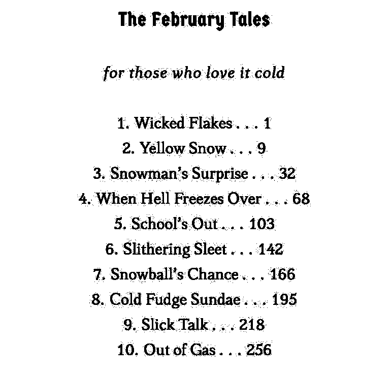

Novelette Documentation
 Home Tutorial Document Body Front Matter
Home Tutorial Document Body Front Matter
 Index
Index
Table of Contents
Overview
Most popular fiction has no table of contents. The reader is expected to read through, perhaps placing a bookmark (or face the open book down) as a pause.
A table of contents may be used when the book (1) Is a collection of short stories, or (2) Has titled chapters, so distinctive that they are self-contained episodes.
Novelette has no automated table of contents, because that requires two-pass compiling (not the Novelette way of doing things). If you need a table, you must construct it yourself, then later insert the actual page numbers and other information.
If you need to know where to place a Table of Contents within frontmatter, whether it should be recto or verso, what to list in the table and what not to list, and what material may follow the table: Search the Internet. Be aware that most of the results will apply to nonfiction. If you begin your search question with "book design" then you are more likely to get better answers.
This documentation only shows you how to construct the table.
General Information
 TOP
TOP
Remember that you are writing for a popular audience, not academic research. Model your table(s) after what you see in printed books, with similar popular genres.
As with anything else, the table must be contained within a component environment. You will not need the
\maintextcommand, because all of it should be in the display zone.The title of the table may be Contents or something else. If the book title is short, especially when it is a collection of short stories, you may use the book title as the table title.
Use a
\styleNfor the table title.If you have a very short Dedication or Epigraph that is not on a separate page, you may cheat, by placing it between the table title and the table entries. This is just a way to avoid excessive blank pages.
The table does not need to be alone on its page. You may place other text and images. But do not place them inside the table.
You may use more than one table.
Novelette does not have automatic page numbering. Did Dickens, Goethe, Rabelais, or Cervantes have it? No! They wrote great books without it. So can you. Maybe.
Use
{\next}as a placeholder, wherever information (such as page number) is not yet known. It prints two numbersign characters (##), and sets an internal flag. Novelette will remind you when there are any{\next}in your document, and will not let you proceed to preview or final mode until you replace them with actual information.
The toc Environment
TOP
Novelette's toc environment is designed for the kind of table that has vertical sides, with chapter linked to page by a variable row of dots.
\begin{toc}[I] entries \end{toc}
Option
[I]is the number of indents that both sides of the table will be offset from the margins. Default 0.Commands
\entryand\padentrymay be used within the toc environment. See below.
\entry{number}{name}{page}
TOP
The toc environment allows you to write its entries with the \entry
command. It takes three arguments: chapter number, chapter name, page number.
If an entry (such as Prologue) does not have a chapter number, leave those braces empty.
The page number is its "bookpage," as seen in print. It may be roman or arabic numerals.
Each entry will span the width allowed by the toc side offsets. The chapter numbers are aligned right-justified in a column, followed by period and space. The chapter titles are in a left-justified column. A row of spaced dots links each title to its page number. The page numbers are in a right-justified column.
\padentry{value}
TOP
The toc environment allows you to vertically spread its entries, so that a table with few entries is not crowded to the top of the page. Or, if the table requires a second page, it allows you to distribute the entries.
\padentry{value}applies a vertical gap to the top of each\entry. The value is a number from 0 to 1. May be decimal. Value 0 means no added gap. Value 1 is a blank line at full baseline skip. Default value 0.You may use
\padentryimmediately after the toc begins. If you have more than one table, then use\padentryfor each of them.
Example Using toc Environment
TOP
\begin{component}[guide=0]
\blankline\blankline
\style3{The February Tales}
\blankline
\style5{\textit{for those who love it cold}}
\blankline
\begin{toc}[3]
\padentry{0.5}
\entry{1}{Wicked Flakes}{1}
\entry{2}{Yellow Snow}{9}
\entry{3}{Snowman's Surprise}{32}
\entry{4}{When Hell Freezes Over}{68}
\entry{5}{School's Out}{103}
\entry{6}{Slithering Sleet}{142}
\entry{7}{Snowball's Chance}{166}
\entry{8}{Cold Fudge Sundae}{195}
\entry{9}{Slick Talk}{218}
\entry{10}{Out of Gas}{256}
\end{toc}
Result of above code, using toc:

Alternative: block Environment
TOP
Instead of the toc environment, you may create a table of contents using the block environment.
Use
[0/0,align=center]for the block option.The
\entryand\padentrycommands are not available.Each entry should be a line of text, ending in
\par. Typically, the line will contain chapter number, period, space, chapter name, three or more spaced periods, page number. Like this:12. Revenge Arrives . . . 223\par
Example Using block
TOP
\begin{component}[guide=0]
\blankline\blankline
\style3{The February Tales}
\blankline
\style5{\textit{for those who love it cold}}
\blankline
\begin{block}[3/3,align=center]
1. Wicked Flakes . . . 1\par
2. Yellow Snow . . . 9\par
3. Snowman's Surprise . . . 32\par
4. When Hell Freezes Over . . . 68\par
5. School's Out . . . 103\par
6. Slithering Sleet . . . 142\par
7. Snowball's Chance . . . 166\par
8. Cold Fudge Sundae . . . 195\par
9. Slick Talk . . . 218\par
10. Out of Gas . . . 256\par
\end{block}
\end{component}
Result of above code, using block:

Home Tutorial Document Body Front Matter
TOP